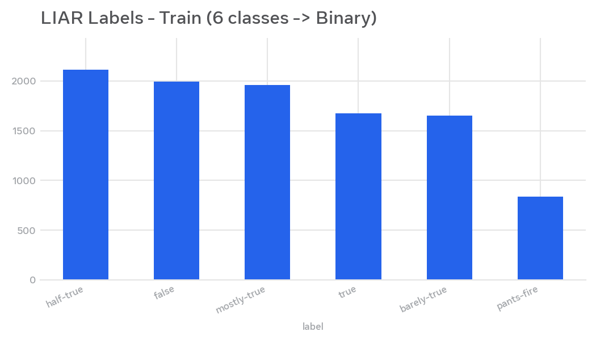
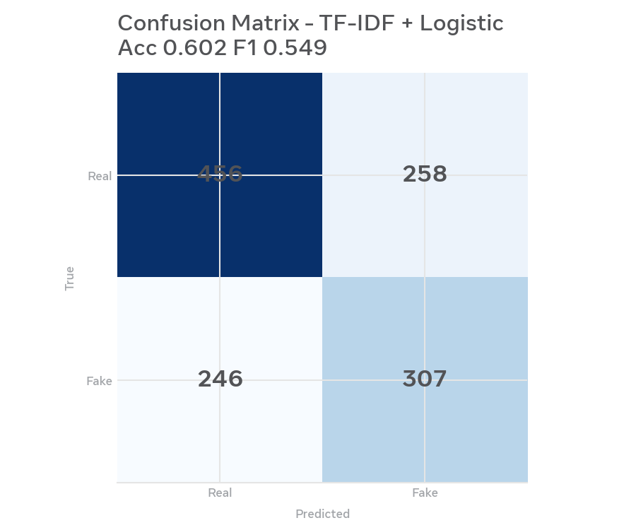
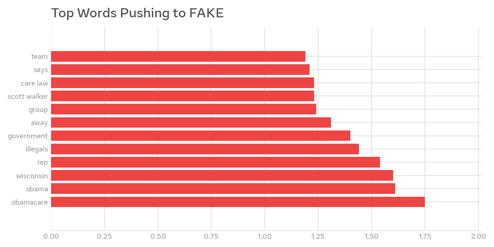

Real LIAR / PolitiFact | Train 10240 | Test 1267 | Binary: Fake = pants-fire/false/barely-true



Honest Note: BERT code in repo, F1 not claimed without GPU run. TF-IDF is the proven baseline.
Repo: Link 1 - GitHub Repo | Result: Link 2 - This Dashboard